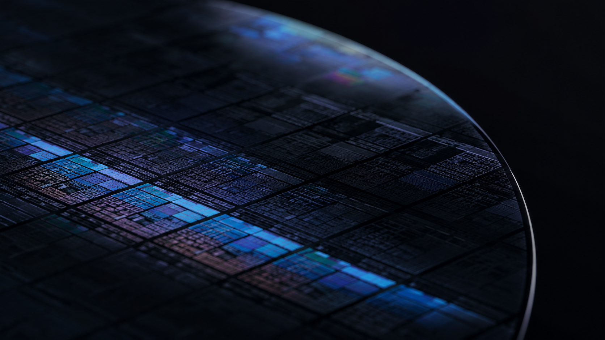
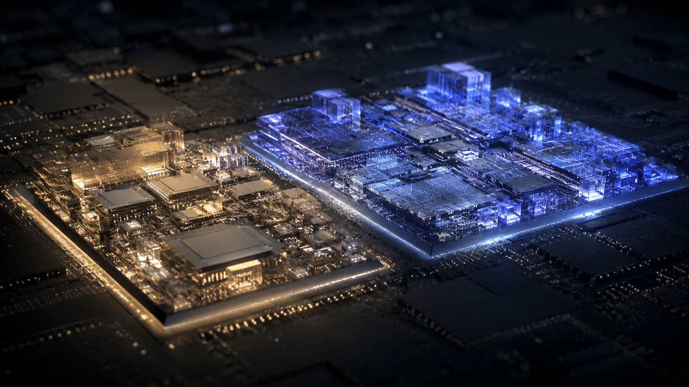
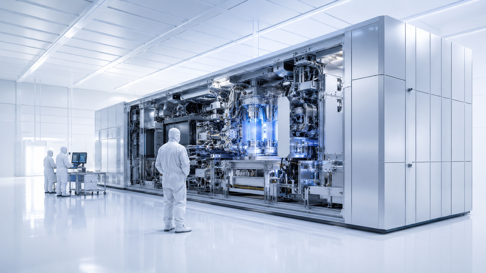
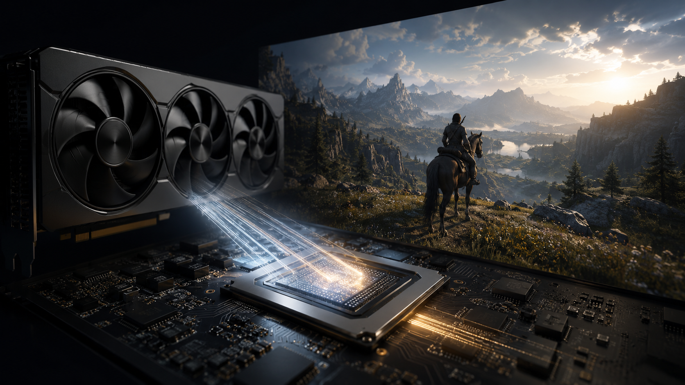
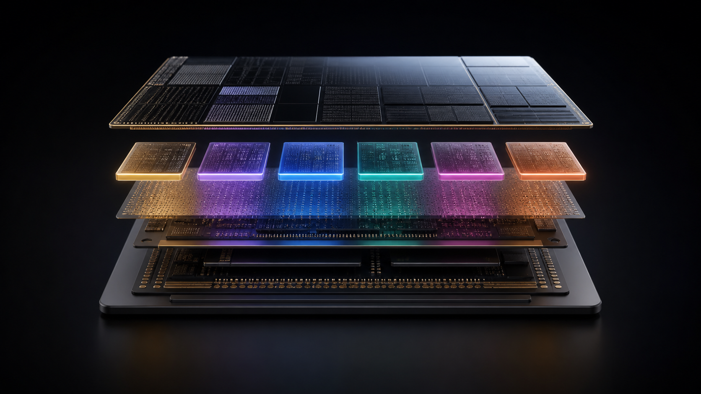
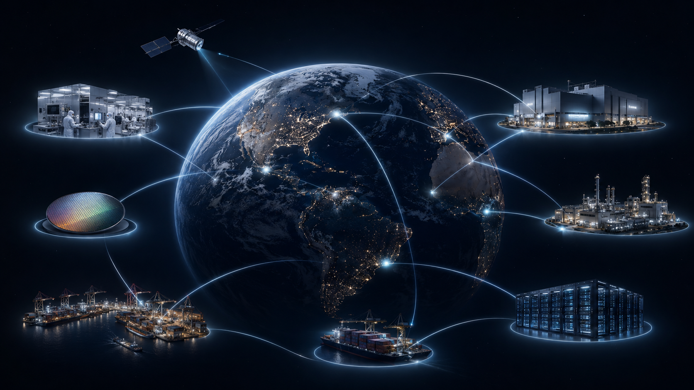

它不发光，却点亮整个时代。
芯片不是某一种产品。它是手机、汽车、医疗设备、通信网络、人工智能和能源系统共同依赖的基础语言。
如果说电是现代文明的血液，那么芯片就是让这股血液有方向、有逻辑、有判断的神经系统。
芯片制造最迷人的地方在于：它把最普通的材料，推向了人类工业精度的极限。

芯片不是"做出来"的，更像是被一层层"雕刻"出来的。每一步都必须正确，因为一个微小颗粒，就可能让价值极高的晶圆报废。
光刻机做的事情极其优雅：它用光，把人类设计的逻辑，写进一片几乎完美的硅。
这里的光已经接近 X 射线。它不是普通照明，而是一种被驯服的极端物理现象。
它不是一台设备，而是光学、真空、机械、软件、材料和全球供应链共同完成的工业交响。

从远处看，它只是一片晶圆；从纳米尺度看，它是一座由电流、绝缘体和金属通道构成的微型城市。
芯片的进步不是简单变小。每一次缩小，都意味着更高的电流控制、更低的功耗、更复杂的材料，以及更昂贵的制造系统。
过去，人们关注"芯片有多小"；现在，还要关注"芯片之间如何连接"。先进封装正在把多个芯片组合成新的计算系统。
芯片从来不是一个国家、一家公司、一个工厂独立完成的产品。它是全球分工最精密的结果之一。
芯片产业昂贵，不只是因为机器贵，而是因为每一次技术进步，都要同时支付设备、工厂、研发、人才、良率和时间的成本。
先进晶圆厂不是普通工厂。它需要超洁净环境、稳定电力、大量用水、化学品供应、工程师体系和上下游生态。

TSMC 的核心能力不是"会做芯片"，而是能够把极复杂、极高风险的制造过程，变成可重复、可量产、可交付的系统。
我们每天触摸手机屏幕、刷门禁、扫码支付、开车导航、戴手表测心率。表面是生活便利，底层是芯片在持续工作。

如果把计算机比作一座城市，CPU 就是调度中心。它不一定同时做最多的事，但它决定什么先做、什么后做、资源如何分配。
CPU 像一位经验丰富的指挥家；GPU 像一支庞大的乐团。游戏画面、AI 训练、视频渲染，本质上都需要海量重复计算，GPU 正是为这种工作而生。
未来的智能，不会全部发生在云端。它会安静地留在手机、电脑和可穿戴设备里，更快，也更私密。
你按下快门的一瞬间，芯片同时完成对焦、降噪、HDR、AI 识别、压缩存储和网络同步。手机之所以"聪明"，不是因为一个功能强，而是因为一整套芯片系统在协同。

电脑芯片不是单纯追求速度。它还要控制功耗、降低发热、延长续航，并在轻薄机身中维持稳定性能。真正优秀的芯片，是力量与克制的平衡。
玩家看到的是一片雪地、一束光、一辆车的反光。芯片看到的，是数以亿计的计算任务。每一帧流畅画面，都是硬件、算法、引擎和显存共同完成的瞬间奇迹。

显卡早已不只是"让游戏更清晰"的设备。它同时是游戏渲染引擎、视频创作引擎，也是 AI 时代最重要的算力平台之一。
"一颗芯片很小， 小到可以藏在指尖； 但它承载的产业、资金、知识和工程能力， 却足以映照一个时代。"
Small Silicon. Vast Civilization.